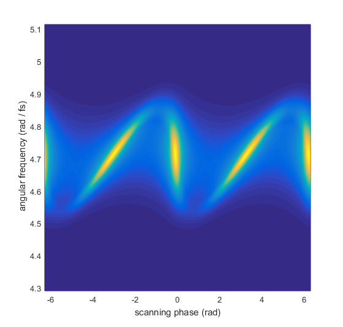

Example of MIIPS simulation
Multiphoton Intrapulse Interference Phase Scan (MIIPS) is a popular technique for femtosecond pulse compression, which involves modulating the spectral phase and recording second harmonic spectra.
The second harmonic generation (SHG) is sensitive to the spectral phase, so by analyzing the dependence of the SHG from the modulation parameters it is possible to derive an estimate of the spectral phase.
Contents
Initialize laser pulse
p = gaussianPulse('f0', 300/800, 't0', 0, 'fwhm', 20, ... 'dt',1, 'nPoints', 2^12); p.polynomialPhase([1e4 100 0 0])
Set up the modulation parameters
In the most common implementation of MIIPS, the phase modulation is a sinusoid, given by:
amp * sin( tau * (w - w0) - phi)
where phi is a scanning parameter.
% modulation amplitude amp = 10; % rad % modulation frequency tau = 10; % fs % scanning parameters phaseSteps = -2*pi: 0.01 : 2*pi;
Create a matrix with the phase modulation mask
The modulation mask must be a matrix with frequency on the first dimension and scanning parameter on the second dimension.
[W, PHI] = ndgrid(2*pi * p.frequencyArray, phaseSteps);
W0 = 2*pi * p.centralFrequency;
% the phase modulation mask is:
modulationMask = exp(1i * amp * sin(tau * (W-W0) - PHI));
Calculate the MIIPS trace
Multiply the pulse by the phase modulation mask
% make sure to multiply in the frequency domain p.activeDomain = 'frequency'; p = p * modulationMask;
Calculate the second harmonic and get a LaserPulse object which contain the MIIPS trace.
% harmonics are easier to calculate in time domain p.activeDomain = 'time'; miips = p^2;
Display the MIIPS trace
figure(1) pcolor(PHI, W, miips.spectralIntensity); shading flat ylim([-4*pi, 4*pi]*miips.bandwidth + 2*pi*miips.centralFrequency) xlabel('scanning phase (rad)'); ylabel(sprintf(' angular frequency (rad / %s)', miips.timeUnits))